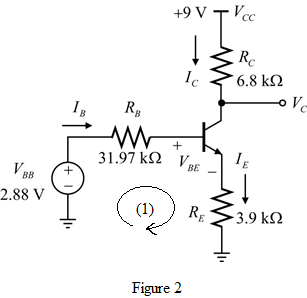

Apply voltage division rule to calculate the value of the base voltage,  .
.
Calculate the value of the base resistance,  .
.
Refer to the circuit diagram in Figure P6.147 in the text book.
(a)
Both the common-emitter amplifiers are identical, so the dc analysis is same for both the circuits. In dc analysis, the capacitor acts as an open circuit. So, both the CE amplifiers are separate.
Draw the dc analysis of the circuit for single transistor.
Apply voltage division rule to calculate the value of the base voltage, .
Calculate the value of the base resistance, .
Draw the modified circuit for the circuit in Figure 1.

Apply Kirchhoff’s voltage law to loop (1) shown in Figure 2.

Substitute for  ,
,  for
for  ,
,  for
for  , for
, for  and
and  for
for  .
.
Calculate the value of  .
.

Substitute  for
for  .
.

Calculate the value of the collector current,  .
.

Substitute  for
for  and for
and for  .
.
Thus, the value of the collector current for each transistor is .
(b)
Calculate the value of the trans-conductance,  .
.

Substitute for  and
and  for
for  .
.
Calculate the value of the resistance,  .
.

Substitute  for
for  and for
and for  .
.
Draw the small signal equivalent circuit of the entire amplifier.
Thus, the small signal equivalent circuit of the entire amplifier is drawn.
(c)
Draw the small signal equivalent for the common-emitter amplifier with transistor 1.
Calculate the input resistance for transistor 1, .
Substitute  for
for  and
and  for
for  .
.
Thus, the input resistance for transistor 1,  is .
is .
Simplify further.
Thus, the value of  is .
is .
(d)
Both the common-emitter amplifiers are identical, so the input resistances are also same.
Thus, the input resistance for transistor 2, is  .
.
Redraw the small signal equivalent for the common-emitter amplifier with transistor 1.
Apply Ohm’s law to calculate the value of  .
.
Substitute  for
for  .
.
Thus, the value of  is
is .
.
(e)
Draw the small signal equivalent for the common-emitter amplifier with transistor 2.

Substitute for  and
and  for
for  .
.
Thus, the value of  is.
is.
(f)
Calculate the overall voltage gain,  .
.
Substitute for  , for and for .
, for and for .
Thus, the overall voltage gain  of the circuit is.
of the circuit is.